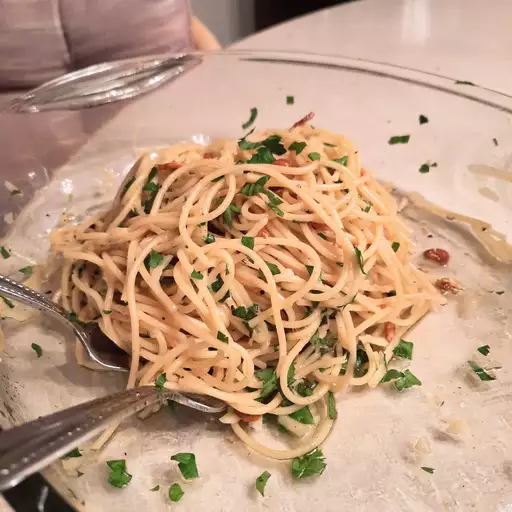

Spaghetti Aglio e Olio

Description:
Chef John's spaghetti aglio e olio recipe is pure Italian comfort food.
No two aglio e olio recipes are alike, but this one is pretty
true to the classic method. The key is slowly toasting the garlic
slices to a perfect golden brown in the olive oil. If it's too
light, you don't get the full flavor and if it's too dark it gets
bitter. My advice? Do it perfectly.
Ingredients:
- 1 pound of uncooked spaghetti.
- ½ cup of olive oil.
- 6 cloves of thinly sliced garlic lends.
- Crushed red pepper flakes.
- Black pepper.
- Fresh parsley.
- Parmigiano-Reggiano cheese.
Steps:
- Boil the spaghetti.
- Toast the garlic in olive oil.
- Stir the seasonings into the pasta, then stir in the garlic and oil.
- Toss with cheese.
Back to Main Menu